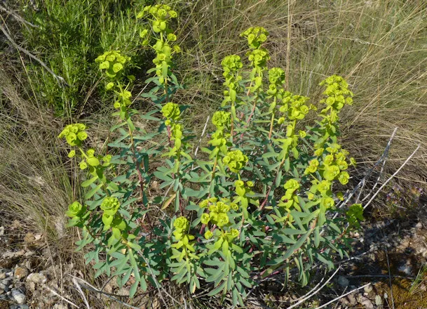

Ayuntamiento de Senés
JARDIN BOTANICO DE ESPECIES AUTOCTONAS DE SENES

Euphorbia characias

La lechetrezna (Euphorbia characias) es una planta perenne característica del ecosistema mediterráneo, ampliamente distribuida en zonas secas, soleadas y de suelos pobres o calizos. Presenta un porte erecto y robusto, con tallos gruesos que pueden alcanzar hasta 1,5 metros de altura en condiciones favorables.
Sus hojas son alargadas, estrechas y persistentes, de color verde grisáceo, lo que le permite reducir la pérdida de agua y adaptarse a climas áridos. Sus inflorescencias, de tonalidad verde amarillenta, son muy llamativas y tienen una gran importancia ecológica al atraer a numerosos insectos polinizadores.
La lechetrezna es una especie característica de la región mediterránea, donde crece de forma natural en zonas secas, soleadas y con escasa humedad. Se adapta especialmente bien a suelos pobres, pedregosos y calizos, siendo muy frecuente en laderas, monte bajo y terrenos degradados. Su resistencia a la sequía y a las altas temperaturas la convierte en una planta habitual en ecosistemas semiáridos.
La lechetrezna posee diversas propiedades conocidas desde la antigüedad, aunque debe utilizarse con precaución debido a la toxicidad de su látex. Tradicionalmente se ha empleado en usos externos, especialmente en aplicaciones relacionadas con la piel.
La lechetrezna ha sido asociada con la protección y la advertencia, debido a la presencia de su característico látex blanco. Su apariencia robusta y su resistencia la convierten en un símbolo de adaptación y supervivencia en entornos difíciles.
En Senés, se utilizaba el látex de la lechetrezna , que es un liquido lechoso, para eliminar las verrugas y callos. Es una planta tóxica y venenosa y se manipulaba con mucho cuidado.
La lechetrezna puede florecer durante gran parte del año en climas mediterráneos suaves, aunque su periodo principal de floración se concentra entre finales de invierno y primavera. Sus inflorescencias, de tonalidad verde amarillenta, aparecen en abundancia y contribuyen a la alimentación de insectos polinizadores.
La lechetrezna es conocida por su látex blanco, una sustancia que puede resultar irritante y que ha sido utilizada tradicionalmente en aplicaciones específicas. Este rasgo es característico de muchas especies del género Euphorbia.
Además, es una planta muy resistente que forma parte habitual del paisaje mediterráneo, destacando por su capacidad de adaptación a condiciones extremas de sequía.